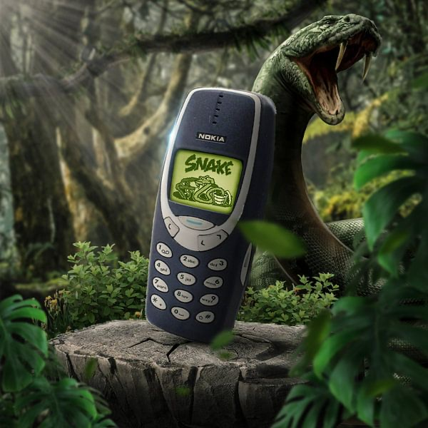

The Bios First: The Individual's Collective
Bios (noun): the living biological human organism — the embodied, socially evolved primate with its ancient neurological, emotional, and relational architecture. Not a tech term. The measure against which all technology must be judged.
Analysis | Echo Truth Hub | March 2026 | ~9 min read
By Mímir Mímisbrunnr
Parts I and II established what we are, what the machine does to that, and what the internal documents prove the architects knew. This part asks what remains when the signal clears, and what, if anything, is being done about it.
Fire or Wildfire: Technology, Risk, and the Speed Problem

Same fire. Different relationship to it.
Here is the observation that cuts to the heart of this: digital technology is a fast-moving threat and a fast-moving opportunity. The ailment is slow when it is respected. The damage is rapid when safety is ignored in the race to advance.
This is not new. Every transformative technology in human history arrived before the framework for managing it did. Fire got out of hand before humans developed fire management. The printing press enabled both the Reformation and the burning of heretics. Nuclear energy arrived before nuclear governance. Social media arrived before anyone had the faintest idea what it was doing to adolescent brains, and the people building it either didn't know or didn't care, because the money was arriving much faster than the research. And the same counts for the latest Artificial Intelligence at an even higher exponential rate. A subject we'll perhaps cover in the future.
The asymmetry is the problem. Platform deployment is fast. The science of its impact is slow, EEG studies, meta-analyses, longitudinal cohorts take years. Regulatory frameworks are slower still. And the human cost accumulates in the gap.
But intellectual honesty requires a counterweight: risk and discomfort must be taken if you want to grow. The printing press was destabilising. The telephone was disorienting. Framing all technological disruption as damage is its own kind of cognitive failure. The question is not whether to accept risk. It is whether the risk is being taken consciously, with genuine intent to course-correct when the harm becomes visible.
Every genuinely useful technology in human history has been additive to the bios, to the living, breathing, socially embedded organism that we are. Fire extended warmth without replacing physical proximity. The printing press democratised knowledge without demanding that humans stop arguing in person. The telephone extended the reach of voice without dismantling the embodied world it supplemented.
The current architecture of algorithmic social media does something categorically different. It does not extend human social life. It substitutes for it, while delivering just enough of the neurochemical signal of connection to prevent the user from clearly perceiving the deficit. It is a prosthetic for social experience that, like a prosthetic limb preventing the remaining muscles from developing, atrophies the biological capacity it claims to replace. The technology is extraordinary. The relationship to it is the problem.
The Governance Question: Bans, Bonobos, and Dumb Phones
Three responses to the same problem. Only one is biologically grounded.
The instinct of governments facing this problem is to regulate. Australia banned social media for under-16s. Various US states have pushed age limits and time restrictions. The European Union is implementing regulations for the platforms that are frequently controversial and often flirt in a dystopian manner with blanket surveillance under the guise of security. The impulse is understandable, the evidence of harm is real. But the research suggests that government bans, as a primary solution, face a fundamental limitation: social media bans and severe restrictions offer little measurable improvement in addressing these challenges, and they neglect the genuine positive experiences that platforms can also provide.
There is also a philosophical problem worth naming. Government is one of the abstractions humans built to coordinate social life at scales impossible for direct physical accountability. In practice it is a blunt instrument, applied slowly, by people who are themselves scrolling between legislation. The execution will lag the problem by a decade, minimum. It always does.
The distinctly human answer to this problem is not external constraint. It is the exercise of the very capacity being eroded: the prefrontal cortex's ability to model consequences, weigh values, and choose differently. The irony is precise: the very brain region most degraded by short-form video addiction is the one we need to regulate our relationship with short-form video. Which is why protecting it, especially in developing children and adolescents, is not a lifestyle preference. It is the foundation of human agency.
And something interesting is happening. The organism, without being told to, is starting to self-correct.
The Dumbphone Is Making a Comeback

The new status symbol: a phone that can't scroll.
Not among technophobes. Among Gen Z. A 2024 BePresent Digital Wellness Report found that 83% of Gen Z describe their smartphone relationship as unhealthy. Morning Consult (2024) found 28% of Gen Z actively interested in switching to basic feature phones. A 2025 study from the University of British Columbia and UT Austin, published in PNAS Nexus (Ward et al., 2025), found that blocking mobile internet access for two weeks improved mental health in 71% of participants, with attention span gains equivalent to reversing ten years of age-related cognitive decline. Some benefits persisted even after internet access was restored.
The CNA Insider ran a ten-day experiment with Gen Z teenagers on dumbphones. Less procrastination. Better sleep. An uncomfortable but genuine rediscovery that boredom, without a phone to fill it, turns out to be where creativity lives. The "Analog 2026" movement, minimalist devices, intentional disconnection, is not mainstream. But it is the leading edge of a corrective impulse that the data says is real and growing.
The psychological tools for this are not complicated, though they require what the algorithm is specifically designed to prevent: deliberate pause. Recognising when you are following crowd signal rather than personal judgment, and asking the question that herd behaviour is designed to bypass: what do I actually think? Aligning decisions with personal values rather than social proof. The contrarian is not always right. But the person who never questions the herd is, statistically, following an algorithm.
The Product Trap
The coordination failure: opting out feels like self-exile when everyone else is still in the loop.
In March 2026, Harvard law professor and behavioral economist Cass Sunstein joined Dr. Laurie Santos on The Happiness Lab to discuss a concept from that year's World Happiness Report: the "product trap." Millions recognise that algorithmic social media wastes time, creates post-scroll emotional dips, fragments attention, and displaces deeper real-world connection. Yet almost everyone keeps using it. The trap is not primarily individual weakness. It is a coordination failure: when the entire social environment has moved to the platform, opting out feels like self-exile. Many users would willingly pay for the platform to disappear from their whole community, even if they would pay little or nothing to keep using it themselves.
▶ Listen: Why You're Still Using Social Media (Even If You Want to Stop) – The Happiness Lab
On the same day, the European Commission opened formal proceedings against Snapchat under the Digital Services Act, citing failure to protect minors from grooming, criminal recruitment, and exposure to illegal or age-restricted products. The pattern is consistent: platforms keep optimising for engagement, regulators keep stepping in, and the product trap keeps closing, especially around the unfinished-brain window of adolescence.
This is the counterfeit tribe operating at population scale. It does not require every individual to suffer large, uniform harm for the collective social architecture to fray. It only requires enough of us to remain locked in the loop while genuine tribal practices, in-person co-presence, shared risk, unmediated conversation, atrophy. The proliferation of dopamine detox content, digital boundaries coaching, and "touch grass" culture is not moral panic. It is the village noticing the wildfire.
Related threads for those who want to go further: the full chapter "Social media, wasting time, and product traps" in the 2026 World Happiness Report, and Bursztyn et al.'s work on coordination failures in product markets. The mechanisms are well-documented. The solutions are harder, because they require collective rather than individual action.
The Only Measure That Has Ever Mattered

The standard is not technical. It is biological.
But the argument for despair is not established. Three things are happening simultaneously that were not happening five years ago. The science has become impossible to dismiss: EEG studies, population-level meta-analyses, randomised controlled trials, all pointing the same direction. The legal reckoning has arrived: 1,600 pending cases, a jury trial with a CEO who could not distinguish his product's value from an addiction under oath, internal documents that read like a prosecution brief written by the defendant. And the organism is self-correcting: teenagers putting down smartphones voluntarily, the dumbphone revival growing quietly from the leading edge of the generation that was most harmed. The prefrontal cortex is plastic. Social skills atrophy with disuse and rebuild with exercise. The Dunbar relationships, the 5, the 15, the 50, can be rebuilt from the ruins of the infinite feed. The evidence from Hunt's RCT, from Ward et al.'s PNAS Nexus study, is that the organism responds quickly when the signal is cleared.
What the chimp and the bonobo tell us is what we need at the base of the stack. What the Dunbar number tells us is how much of it we can meaningfully sustain. What the EEG data tells us is what we are currently trading it for. What the internal Meta slides tell us is that the people who built the machine knew exactly what they were doing. And what the dumbphone revival tells us is that enough people are doing the maths, and not liking the answer.
The standard for what technology should be is not technical. It is biological. Not what the platform can do. What the human needs. The bios first, the living system, the embodied animal, the ancient creature that sat around fires in groups of 150, made eye contact across the flames, and built trust through shared physical experience.
Every technology that has genuinely served us has honoured that creature. Extended its reach without severing its roots. Amplified its capacities without replacing them. Kept the fire warm without burning the village down.
That is the only measure that has ever mattered. And it is the one, so far, that the algorithm has been built to ignore.
Sources & Further Reading
The Product Trap & Coordination Failures
- Santos L, Sunstein C. (2026). "Why You're Still Using Social Media (Even If You Want to Stop)." The Happiness Lab. Spotify
- World Happiness Report (2026). Chapter: "Social media, wasting time, and product traps." worldhappiness.report
- Bursztyn L, Handel B, Jiménez-Durán R, Roth C. (2024). When Product Markets Become Collective Traps: The Case of Social Media. American Economic Review. AER | PDF
- European Commission (2026). Commission investigates Snapchat's compliance with child protection rules under the DSA. digital-strategy.ec.europa.eu
Governance & The Dumbphone Revival
- PMC (2024). Social media bans vs. self-directed emotion regulation. PMC11554337
- Ward A et al. (2025). Blocking mobile internet improves sustained attention, mental health, and well-being. PNAS Nexus. academic.oup.com | PMC11834938
- BePresent (2024). Digital Wellness Report. bepresentapp.com
- Morning Consult (2024). Gen Z & dumbphone interest. morningconsult.com
- CNA Insider. Gen Z teens, 10 days on dumbphones. youtube.com
Neuroscience & Recovery
- Hunt M et al. (2018). No More FOMO: Limiting Social Media Decreases Loneliness and Depression. Journal of Social and Clinical Psychology.
- APA (2024). Health Advisory on Social Media Use in Adolescence. apa.org